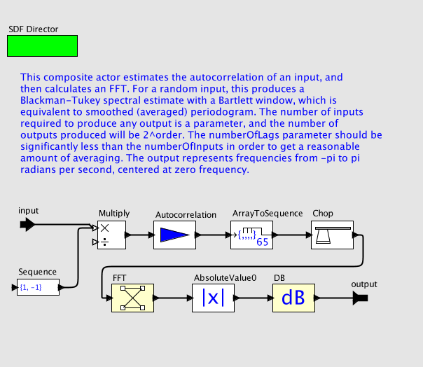

SmoothedPeriodogram

Your browser does not support JavaScript so moving the mouse over the actors will not display their parameters. To enable JavaScript, consult the security preferences of your browser.
See
http://support.microsoft.com/gp/howtoscript
for details.